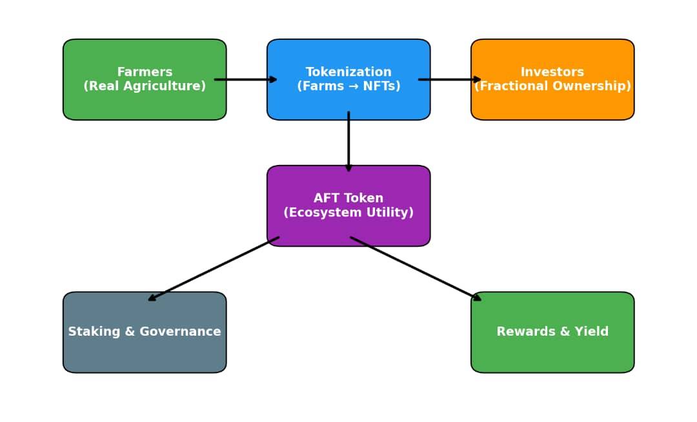

AgricFi combines DeFi, tokenization, and real-world farm verification to create a market for agriculture-backed digital assets.
The financial backbone of AgricFi. Bridges the funding gap between smallholder farmers and global investors through an open, decentralized gateway for agricultural financing.
AgricFi's proof-of-impact layer. Captures and records all farm activities that contribute to environmental sustainability with full on-chain transparency for investors and regulators.
The $AGFI token powers all activities within the ecosystem — the transactional, governance, and incentive engine. Stake $AFT to earn yield and participate in decision making.
The investor's control center — a real-time performance monitor aggregating on-chain data, IoT metrics, and market analytics into one intuitive interface.
Transform real farmland and crop batches into verified digital assets. Each NFT represents a fraction of a real-world farm, making agricultural ownership accessible to anyone globally.
AgricFi's digital trading hub — buy, sell, and auction farm NFTs, produce tokens, and sustainability credits within a secure, decentralized on-chain marketplace.
